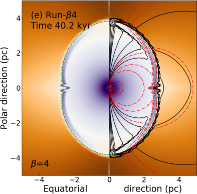
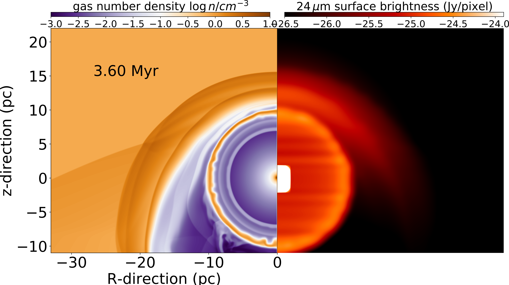

|
|
On the bipolarity of Wolf-Rayet nebulae
Meyer D. M.-A.
|
| 
Asymmetric MHD Wolf-Rayet nebula |
Wolf-Rayet stars are amongst the rarest but also most intriguing massive
stars. Their extreme stellar winds induce famous multi-wavelength circumstellar
gas nebulae of various morphologies, spanning from circles and rings to bipolar
shapes. This study is devoted to the investigation of the formation of young,
asymmetric Wolf-Rayet gas nebulae and we present a 2.5-dimensional
magneto-hydrodynamical toy model for the simulation of Wolf-Rayet gas nebulae
generated by wind-wind interaction. Our method accounts for stellar wind
asymmetries, rotation, magnetisation, evolution and mixing of materials. It is
found that the morphology of the Wolf-Rayet nebulae of blue supergiant
ancestors is tightly related to the wind geometry and to the stellar phase
transition time interval, generating either a broadened peanut-like or a
collimated jet-like gas nebula. Radiative transfer calculations of our
Wolf-Rayet nebulae for dust infrared emission at 24 micron show that the projected
diffuse emission can appear as oblate, bipolar, ellipsoidal or ring structures.
Important projection effects are at work in shaping observed Wolf-Rayet
nebulae. This might call a revision of the various classifications of
Wolf-Rayet shells, which are mostly based on their observed shape.
Particularly, our models question the possibility of producing pre-Wolf-Rayet
wind asymmetries, responsible for bipolar nebulae like NGC 6888, within the
single red supergiant evolution channel scenario. We propose that bipolar
Wolf-Rayet nebulae can only be formed within the red supergiant scenario by
multiple/merged massive stellar systems, or by single high-mass stars
undergoing additional, e.g. blue supergiant, evolutionary stages prior to the
Wolf-Rayet phase.
|
On the ring nebulae around runaway Wolf-Rayet stars
Meyer D. M.-A., Oskinova L., Pohl M., Petrov M.
|
| 
Infrared Wolf-Rayet ring nebula |
Wolf-Rayet stars are advanced evolutionary stages of massive stars.
Despite their high mass-loss rates and strong wind velocities, none
of them display a bow shock, although a fraction of them are classified
as runaway. Our 2.5D numerical simulations of circumstellar matter around
a 60 Mo runaway star show that the fast Wolf-Rayet stellar wind is released
into a wind-blown cavity filled with various shocks and discontinuities
generated throughout the precedent evolutionary phases. The resulting fast-wind
slow-wind interaction leads to the formation of spherical shells of swept-up
dusty material similar to those observed at near-infrared 24 micron Spitzer,
and appear to be co-moving with the runaway massive stars, regardless of their
proper motion and/or the properties of the local ambient medium. We interpret
bright infrared rings around runaway Wolf-Rayet stars in the Galactic
plane, like WR138a, as indication of a very high initial mass.
Stellar-wind bow shocks become faint as stars run in diluted media, therefore,
our results explain the absence of detected bow shocks around Galactic
Wolf-Rayet stars such as the high-latitude, very fast-moving
objects WR71, WR124 and WR148.
Our results show that the absence of a bow shock is consistent with a runaway
nature of some Wolf-Rayet stars.
This discredits the in-situ star formation scenario
of high-latitude Wolf-Rayet stars in favor of dynamical ejection from
birth sites in the Galactic plane.
|
Credit image : NASA
|
|
|
|
|